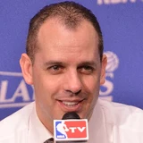

“I Jokic is up there right now. Joel Embiid obviously another dominant big. Anthony Davis giving respect to him too. I think that’s pretty it right there,”


What Andre Drummond has said about Anthony Davis
Every quote from Andre Drummond about Anthony Davis in the archive, newest first. Each one links to its original source.
What Andre Drummond and Anthony Davis have said about each other →
Quotes per season
2020-212021-22
2021-22
1 quote2020-21
2 quotesRyan Ward:Andre Drummond on building chemistry with Anthony Davis:
“The more we play together, the more we communicate we'll get that rhythm.”
Andre Drummond on Anthony Davis:
“It was definitely incredible to have AD out there. ... It felt like we were kids again playing USA Basketball.”
Related
- Everyone on Anthony Davis166 quotes
- Andre Drummond on everyone30 quotes

Frank Vogel on Anthony Davis16 quotes LeBron James on Anthony Davis15 quotes
LeBron James on Anthony Davis15 quotes- Alvin Gentry on Anthony Davis13 quotes
 Andre Drummond on Joel Embiid8 quotes
Andre Drummond on Joel Embiid8 quotes- Rob Pelinka on Anthony Davis6 quotes
 Charles Barkley on Anthony Davis5 quotes
Charles Barkley on Anthony Davis5 quotes Jason Kidd on Anthony Davis5 quotes
Jason Kidd on Anthony Davis5 quotes- Jeanie Buss on Anthony Davis4 quotes